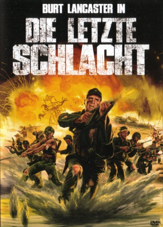

#7327 Die Letzte Schlacht
Alternativ: Go Tell the Spartans
 
 IMDB-Wertung: 6.8 / 10
IMDB-Wertung: 6.8 / 10  Metascore: 0
Metascore: 0 
Vietnam 1964: Eine Handvoll Amerikaner soll mit Unterstützung einheimischer Soldaten einen provisorischen Stützpunkt in einer vermeintlich feindfreien Gegend errichten, einer Gegend, in der Jahre zuvor bereits die Franzosen blutige Kämpfe zu bestehen hatten.\r Als plötzlich zahlenmäßig überlegene Vietcong-Truppen die aus dem Boden gestampfte Basis attakieren und keinerlei Reserven greifbar scheinen, ist die Zeit des Handels gekommen.
Jahr: 1978
Dauer: 110 Minuten
FSK: 16
Land: USA Studio: AVCO Embassy PicturesTonspuren: DD2.0 - ,
Untertitel:
Auflösung: 1080p (1920x1040) Größe: 9687 MB
Genre: Action, Drama, Krieg
Regisseur: Ted Post
Drehbuch: Daniel Ford
Soundtrack:
Darsteller:
 Burt Lancaster als Maj. Asa Barker
Burt Lancaster als Maj. Asa Barker Craig Wasson als Cpl. Stephen Courcey
Craig Wasson als Cpl. Stephen Courcey- Jonathan Goldsmith als Sgt. Oleonowski
- Marc Singer als Capt. Alfred Olivetti
 Joe Unger als Lt. Raymond Hamilton
Joe Unger als Lt. Raymond Hamilton David Clennon als Lt. Finley Wattsberg
David Clennon als Lt. Finley Wattsberg- Hilly Hicks als Signalman Toffee
 Clyde Kusatsu als Col. Minh
Clyde Kusatsu als Col. Minh James Hong als The Old Man
James Hong als The Old Man- Denice Kumagai als Butterfly
- Ralph Brannen als Col. Minh's ADC
 Dabney Coleman als Helicopter pilot , uncredited
Dabney Coleman als Helicopter pilot , uncredited- Dennis Howard als Cpl. Abraham Lincoln
- Evan C. Kim als Cowboy
 John Megna als Cpl. Ackley
John Megna als Cpl. Ackley Dolph Sweet als Gen. Harnitz
Dolph Sweet als Gen. Harnitz- Tad Horino als One-eyed man
- Phong Diep als Minh's Interpreter
- Mark Carlton als Capt. Schlitz
Datei: X:\1978\Letzte Schlacht, Die (1978, FSK16, 1920x1040).mkv seit 16.10.2017
Festplatte: HD 1971-1979
 Es gibt insgesamt 31 Filme in der Gruppe '1978'
Es gibt insgesamt 31 Filme in der Gruppe '1978'